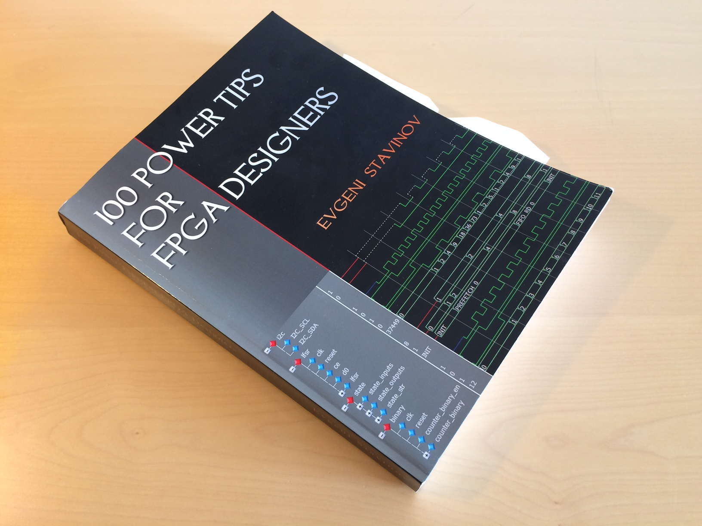

I recently found a great book explaining in details FPGA workflow for Xilinx tools, titled 100 Power Tips for FPGA Designers. Evgeni Stavinov is an experienced FPGA designer who previously worked for Xilinx. It is not evident from the title, but this book focuses almost entirely on the Xilinx, while Altera, Lattice and Microsemi are mentioned just briefly in an FPGA vendor list and every once in a while. Due to a fast-paced development of the FPGAs and corresponding tools, it is clear that a book from 2011 would be slightly outdated in 2016. Most notable change in the previous years was a new software suite from Xilinx, called Vivado and the slow introduction of C-to-FPGA tools, such as Vivado HLS.

Nonetheless, this book is ideal for somebody who already has some (formal) education about the FPGA but lacks the real world experience. The author manages to touch every aspect of the FPGA design, from device selection, simulation, coding, debugging, communication protocols, FPGA board bring-up and all small details one should know about FPGAs.
The book (as the title suggest is organized into 100 tips). Here are my notes and comments to some tips this book provides.
Tip 9
The FPGA field has seen some new tools emerge in the past few years, while
some other tools ceased to exist or were integrated in other software suites.
Under Lint tools should definitely be added Sigasi Editor, an Eclipse
based editor for VHDL and Verilog. Verilator is a cycle based simulator,
since it can be used as a linter (--lint-only) it should be also added on
this list.
Another interesting tool worth mentioning is Doxygen which can create the documentation from the comments in the code and other Markdown documents. The original program does not support Verilog, but there is a fork Doxverilog which also adds a support for Verilog.
Tip 15
This tip states that initial block are ignored by FPGA synthesis tools. This
probably a feature which was added after the release of the book, but both XST
in ISE 14.7
(http://www.xilinx.com/support/documentation/sw_manuals/xilinx14_7/xst.pdf)
and Vivado Synthesis
(http://www.xilinx.com/support/documentation/sw_manuals/xilinx2016_2/ug901-vivado-synthesis.pdf)
now support initialization of the register from initial block.
Vivado Synthesis Guidelines go even further and suggest using inital instead
of reset:
Avoid operational set/reset logic whenever possible. There may be other,
less expensive, ways to achieve the desired effect, such as taking
advantage of the circuit global reset by defining an initial content.
Tip #18
A small typo on page 81, in SystemVerilog logic is a 4-state type which
should replace reg, especcialy in cases in which reg keyword may cause a
confusion (e.g. always_comb block).
Tip #19
While mentioning code editors for Verilog and VHDL it should be worth mentioning that the one integrated in Xilinx and Altera tools are complete garbage. Vivado did not even had a auto-complete until 2016!
The list of code editors could also be extended with Sublime Text and Atom Editor.
Tip #22
This tip discusses meta-stability and data-coherency on clock-domain crossing logic. It would probably be a good idea to also mention how to proceed when a state machine transitions are controlled with asynchronous signals. This is similar problem to data coherency, all input signals should be re-sampled to the state machine clock domain before they are connected to state-transition logic. Otherwise it is possible for state machine to enter illegal states due to different delays from IO pins to registers.
Tip #26
A small typo on page 124, the last line of code example for shift registers should be:
initial shift4 = init2 >>> 2; // result is 8'hE0
Note that result after shift operation should be 8'hE0 (-32) instead of 8'h0E.
Tip #27
I was always wondering if a state machine which has a transition from
default case defined is equivalent to state machine generated with
-safe_implementation switch.
Tip #29
I enjoyed the discussion about various reset mechanism. When I stared
developing with FPGAs I always started writing process blocks the same way
(if !reset_n init_regs_to_something else my_logic_here) not realizing that
often a reset is not needed. This is especially true in data-processing
pipelines.
Tip #34
When initializing Block RAM I would suggest using readmemb and readmemh
system calls instead of proposed Xilinx custom format, since readmemb and
readmemh work also for simulation.
Tips #45-#55
These tips discuss ASIC prototyping with FPGA, which is not my area of interest.
Tip #61
Here it could also be mentioned that Altera offers a free version of ModelSim, called ModelSim-Altera Starter Edition. Compared to Xilinx ISIM and Vivado Simulator, the ModelSim-ASE is stripped-down version of a full ModelSim. Therefore there is a possibility to easily migrate from free to paid version if the need for additional features (such as code coverage) arises.
Tip #62
The figure with the basic testbench components it is a good starting point even for the testbenches which do not use any verification methodology, such as UVM. Several points of what I consider a good testbench (especially for non-UVM, handcrafted testbenches):
-
There is a main procedure which performs the setup, runs the driver and monitor and at the end runs the checker.
-
The setup should be done exactly as software would do it, e.g. if there is an AXI4-Lite port with configuration and status registers AXI4-Lite Master BFM should load the configurations settings on that port. Additionally it is also good to try reading back the configuration values and check them against the values written.
-
The driver and the monitor should operate completely asynchronously one from another. When simulating a module which operates on data stream (e.g. a DSP module with AXI-Stream slave port for input and AXI-Stream master port for output) I like to additionally throttle the output port, to observe how the module behaves when the upstream module is not able to temporarily keep up with data flow.
-
The checker (as the name suggest) checks the data received on the monitor with the reference implementation. When there is a mismatch between the received and expected value, the checker should clearly show the received and expected value (SystemVerilog assertions are a nice way to do this).
Tip #63
The example which shows the delta cycle delays is fantastic and it also demonstrates that Verilog is very powerful, but also very dangerous language. The example is also based on two different registers being clocked by two different clock. If not absolutely necessary I would advise agains using different clock in the same modules, and to use the FPGA vendor provided FIFOs for synchronization between clock domains.
At the end of this tip there is a Verilog code which stores the state name
string in a separated variable. This is one possible source of errors if the
names of states are changed or if new states are added. Much better solution
would be to use SystemVerilog enums, which add a little bit of type
strictness to this otherwise type non-strict language.
Tip #67
I would agree with the observation that the IP, TCP and UDP protocols were not designed to be implemented in hardware. Most problematic is the position of the checksum word in packet header, which does not help neither transmitting neither receiving side. However, https://www.ietf.org/rfc/rfc768.txt foresees sending the packets without the checksum calculation, all bits in the checksum field must be 0. In some cases this may offer an improvement in link latency (if there is some other method to check the data correctness).
Tip #70
This tip describes various FPGA interconnect buses. Due to the Xilinx shift from PowerPC to ARM and with introduction of Vivado, the bus of choice for an FPGA designer should be one of 3 version of AXI buses, either AXI4, AXI4-Lite for configuration registers and AXI4-Stream for streaming data.
Missing on this list is Avalon bus, which is widely used with Altera QSys. There are two versions (memory-mapped and streaming) and provide a very convenient way to interface registers to CPU. Only needed signals need to be specified, while others are automatically added by QSys during the "compilation".
Tip #76
With the new FPGA family, UltraScale, Xilinx provides a new PCIe DMA controller (https://www.youtube.com/watch?v=TzzzM97L4HI). This saves a lot of work to FPGA designers or significantly reduces the price of IPs. By providing various AXI interfaces the PCIe DMA controller enables easy integration with Vivado Block Diagrams. The interfaces on PCIe DMA controller are also similar to the one on embeeded ARM in Zynq FPGAs. Two different form-factors of same product can be easily develop by using either PCIe DMA or Zynq ARM core. A tabletop instrument can use a Zynq to run Linux and provide an interface to the world by touch-screen display or TCP/UDP server. On the other hand, a mezzanine card based solution (e.g. MicroTCA) can use PCIe DMA to provide a link to the main CPU in crate.
Altera also provides similar modules, such as Cyclone V Avalon-MM Interface (https://www.altera.com/literature/ug/ug_c5_pcie_avmm.pdf).
Tip #86
When talking about ChipScope the signal attribute keep should be mentioned,
since it often provides a way to find the post-synthesis nets. The keep
attribute could also be combined with debug attribute for easier identification
of signals.
Verilog example:
(* keep = "true", mark_debug = "true" *) wire [19:0] signal_to_be_dbged;
Tip #90
UCF constants are completely out of date, and were replaced by an equivalent of Synopsys Design Contraints in Vivado.
Tip #93
There is a parameter called cost table between the options for placer, but the
description would suggest that this may be better called seed, since it provides
a starting point for randomized algorithm (placement).
Tip #97
Jenkins is a more-popular fork of Hudson CI. With a good support for tcl, Vivado offers a reasonable easy way to automate the compilation of the entire project directly from the source code in the repository.
Another tools which could be added to this list is hdlmake which is meant to be an equivalent of Make for FPGA projects. Currently it is not able to tackle more complex compilation procedures, such as re-compiling vendor IP cores or handling Vivado Block Diagrams.